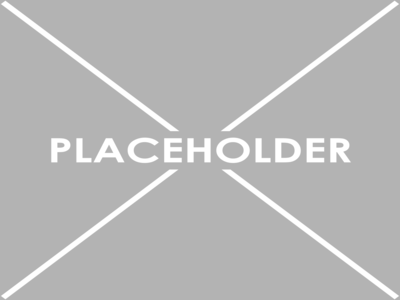

Discover
Durban City Hall
The Durban City Hall, also known as the eThekwini City Hall, was built in the early 1900s in classic neo-Baroque-style. The design of the building is based on Belfast's City Hall in Northern Ireland. An impressive central dome rises to 48m, and is surrounded by 4 smaller domes. Each of the smaller domes has a statue which represents art, literature, music and commerce. This impressive building also houses Durban's Natural Science Museum, a public library, auditorium, and the Durban Art Gallery. Items to see include a dodo skeleton, Egyptian mummy, and plenty of other fossils.
Durban Beach
The most well-known of metropolitan Durban's beaches are North Beach, South Beach and Addington Beach. Set to the north of South Africa's busiest harbour is the North Beach which runs from the Bay of Plenty and Dairy Beach. It is in the heart of the Durban beach-front, now known as the "Golden Mile".
Moses Mabhida
The Moses Mabhida Stadium is a soccer stadium in Durban in the KwaZulu-Natal province of South Africa, named after Moses Mabhida, a former General Secretary of the South African Communist Party. It is a multi-use stadium. The stadium became a venue for several events, like bungee jumping, concerts, cricket, soccer, golf practice, motorsports and rugby union.[1] It was one of the host stadiums for the 2010 FIFA World Cup. The stadium has a capacity of 55,500 (expandable up to 75,000).
Ushaka Marine
A world class entertainment theme park and tourism destination located on Durban’s Golden Mile. Looking for things to do in Durban, South Africa?
Durban Harbour
Durban Harbour is a natural harbour that still resembles the original bay’s shape. It is said that Portuguese explorer, Vasco da Gama, discovered the bay in 1497.
The current metro area population of Ethekwini in 2023 is 3,228,000, a 0.91% increase from 2022. The metro area population of Ethekwini in 2022 was 3,199,000, a 0.72% increase from 2021. The metro area population of Ethekwini in 2021 was 3,176,000, a 0.57% increase from 2020.